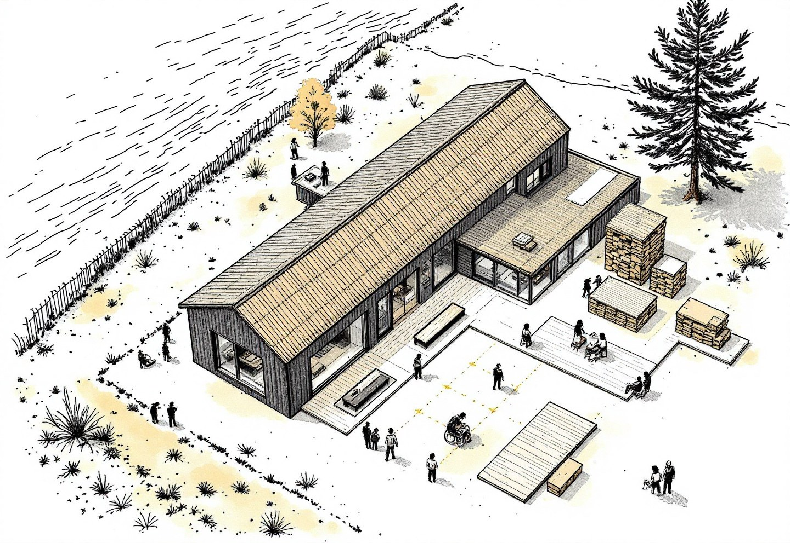
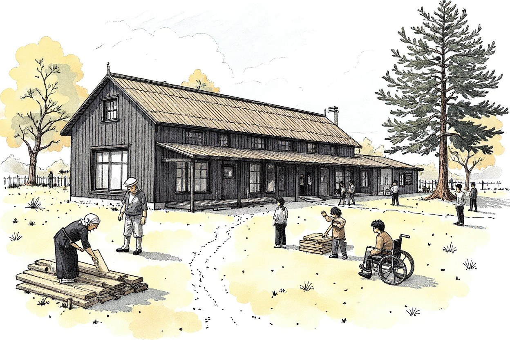
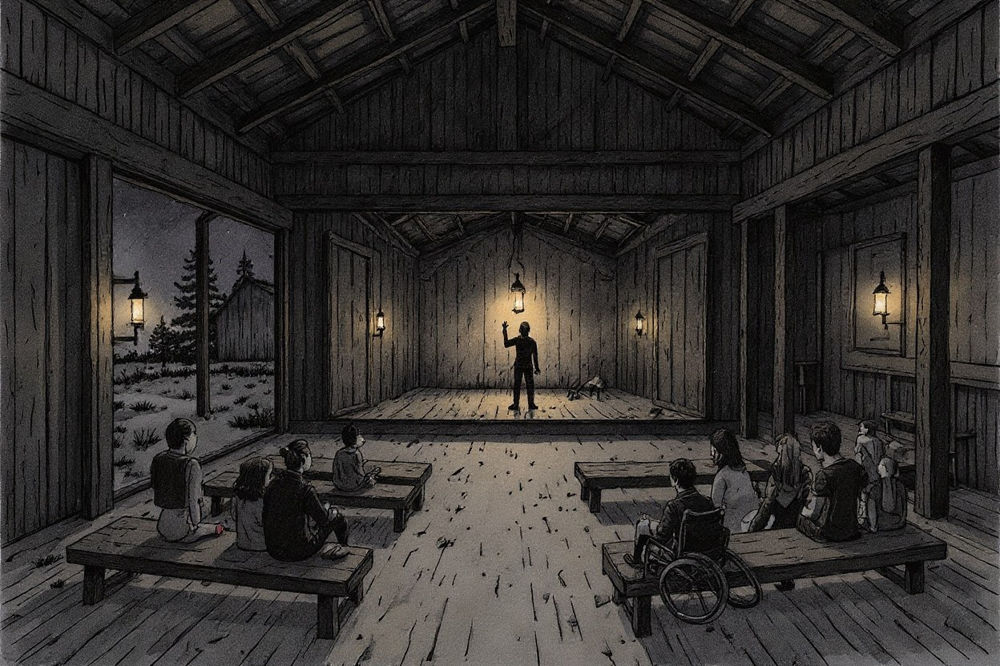
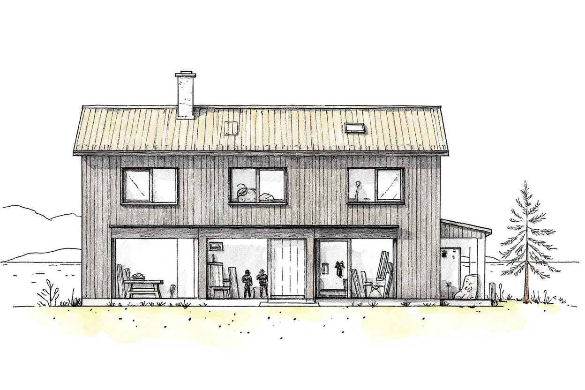

思い描くこと ／ 宿とガレージ
古材の香りがする、
ローカルな工房に泊まる。
古いものには、まだ続きがある。
A workshop by the sea, to stay in.
これは、思い描いている場の構想図です。まだ、ここにはありません。

②③④②庭から（昼） ③工房の中から（夜） ④正面から ―― 以下の絵は、すべて、この同じ場所を、別の角度から描いたものです。
梁も、床も、扉も、町の家から譲り受けた古材。
昼は工房。夜は、小さな劇場。
車椅子の人も、杖の人も、走る子も。
用事がなくても、いていい。
工房をひらきたい。
建物は、1棟。敷地は、ひとつ。下の階にガレージ（工房）があり、前に庭があり、上の階には、泊まれる部屋がある。梁も、床も、扉も、この町の古い家から譲り受けた古材で、深く吸いこんだ木の香りがする。
眠っていた価値を見つけ、編み直し、新しい物語として世の中に送り出す。ここは、そのための場所です。
ここまでの道
この場所は、現場から、つづいています。
庭の草をむしりに伺った家で、片づけを頼まれ、実家じまいに立ち会い、空き家を見まわる。その現場で出会った、古材、古道具、建具、家具、家の記憶。それを救い、手入れして、次の人へ渡していく。その先に、この場所があります。

木を削る音がする。
庭では、近所のおばあちゃんが、棚をなおす板を探している。漁師さんと若者が、古材のテーブルで、お茶をのんでいる。
子どもは、端材で何かをつくり、旅の人は、鞄をおろして、しばらく座っている。
車椅子の人も、杖の人も、走りまわる子も、それぞれの速さで、ここにいる。
用事がなくても、来ていい。何もしなくても、いていい。
海の向こうから来た旅人の、歌と、言葉。
同じテーブルで、まじりあって、新しい物語になる。

工房は、夜、
小さな劇場になる。
ベンチも、舞台も、古材でできている。語りがはじまる。昔話、歌、ひとり芝居。
舞台にのぼるのは、特別な人ではなく、町の誰かであり、旅の誰か。ひとりひとりが、主役になる。
静かな夜もある。食卓を囲んで、ただ、ゆっくり話す夜も。

工房の上に、眠る。
階下の、木を削る音の余韻のなかで、古材の香りに包まれて眠る。朝は、窓の向こうに、海。
ここは、ホテルではなく、家のつづき。家のつづきに、人のつづきがある。
なぜ、編集室なのか
終わりかけた物語に、続きを編む。
文章を編集するように、家や、道具や、人の関係や、町の文化を、編集する。
ものが再生する。人が交わる。文化が生まれ直す。
過去を残すためではなく、未来をつくるために。
古いものから、新しい物語が、生まれつづける場所を。
宿の名前は、まだ決めていません。場所は「小坪の海のそば（富士山が見える場所）」を想定し、これから探します。実現には、物件・資金・旅館業などの許可・近隣のご理解が必要です。事業としては、実績を積んだあとの、最後の段階に置いています（「事業の進め方」をご覧ください）。
手紙
古材の香りがする、ローカルな工房に泊まる。
古いものには、まだ見ぬ未来がある。
海辺の町、小坪。
家の解体現場から救い出された柱や梁、長い年月を生きてきた家具、役目を終えたはずの道具たち。
そんなものが集まる、海のそばの小さな工房。
かつて誰かの暮らしを支えていた柱が、旅人を迎えるテーブルになる。
何十年も開け閉めされた扉が、新しい部屋の入口になる。
使われなくなった道具が、誰かの手によって、再び輝きを取り戻す。
古いものに、新しい命が宿る。
ここは、そんな場所。
そして、ここで生まれ変わるのは、ものだけではありません。
木を削る音で、朝がはじまる。
庭先では、宿の主が古い家具を直している。
近所のおばあちゃんが、納屋に眠っていた古道具を持ってやってくる。
「これ、何に使っていたと思う？」
そんなひと言から、忘れられていた町の昔話が始まる。
漁師が仕事帰りに立ち寄り、海の話をする。
遠い国からやってきた旅人が、故郷の海の話を返す。
同じ海を眺めながら、違う海の話をしている。
庭では子どもたちが木っ端を拾い、何かをつくっている。
職人がその手元をのぞき込み、ちょっとしたコツを教える。
誰かがコーヒーを淹れ、誰かが本を読んでいる。
何かを買わなくてもいい。
何かをつくらなくてもいい。
ただ、そこにいていい。
世界のあちこちから、物語が流れ着く。
この小さな工房には、いろいろなものが持ち込まれる。
古い家から取り外された建具。誰かが手放した椅子。もう使われなくなった大工道具。
そして、旅人たちが持ってくる、遠い土地の言葉や歌、習慣、ものの見方。
小坪の昔話に、異国の物語が重なる。
日本の職人の技に、遠い国の知恵が出会う。
言葉が通じなくても、身振り手振りで笑い合う。
知らない言葉をひとつ覚える。
昨日まで知らなかった誰かの人生が、自分の物語の一部になる。
ここでは、古いものと新しいものが、土地の記憶と世界の文化が、世代も国境も越えて交わっていく。
誰かが何気なく口にしたひと言から、思いがけない企てが始まることもあるだろう。
何十年もこの町にあったものが、海を越えてやってきた誰かの手で、まったく違うものに生まれ変わるかもしれない。
出会うはずのなかったもの同士が出会う。
そこから、まだ名前のない何かが生まれる。
日が暮れると、工房は小さな劇場になる。
昼間まで木を削っていた場所に、椅子が並ぶ。
ある夜は、土地に伝わる昔話。
ある夜は、遠い国の音楽。
ある夜は、小さな芝居が始まる。
見る人と演じる人の境目も、いつの間にか曖昧になっていく。
旅人が故郷の歌を教え、町の人が懐かしい歌を返す。
誰かの言葉に、別の誰かの言葉が重なる。
物語が物語を呼び、思いがけない結末へと転がっていく。
もちろん、何も起こらない夜もある。
薪のはぜる音を聞きながら、ただ海を眺めている。
それもまた、いい。
家のつづきに、人のつづきがある。
家にも、道具にも、町にも、積み重ねてきた時間がある。
古くなることは、価値を失うことではない。
役目を終えることは、物語が終わることでもない。
古い家の柱が、新しい誰かの暮らしを支える。
忘れられかけた技術が、次の世代に手渡される。
遠い国の文化が、この町の文化と出会い、これまでになかった表現が生まれる。
そして、人と人が出会い、また新しい関係が生まれる。
ものが再生する。
人が交わる。
文化が生まれ直す。
私たちは、そんな出来事を「編集」と呼びたい。
古いもののなかに、まだ見ぬ価値を見つけること。
離れていたもの同士をつなぎ、そこから新しい物語を生み出すこと。
そのための、小さな編集室。
宿であり、工房であり、古道具の店であり、ときには劇場にもなる。
けれど、本当につくりたいのは、建物でも、お店でもないのかもしれない。
人と文化が行き交い、物語が絶えず生まれつづける、町の居場所。
旅人は、やがて次の町へ向かう。
町の人は、いつもの暮らしへ帰っていく。
それでも、ここで交わした言葉や、出会った人や、手にした古い道具が、それぞれの人生のどこかで、また新しい物語を始めるかもしれない。
小坪の海のそばに。
古材の香りがする、ローカルな工房に泊まる。
昨日までなかった物語に、出会うために。
暮らしの困りごと編集室 Local Edit（ローカルエディット）
主催 鈴木隆文